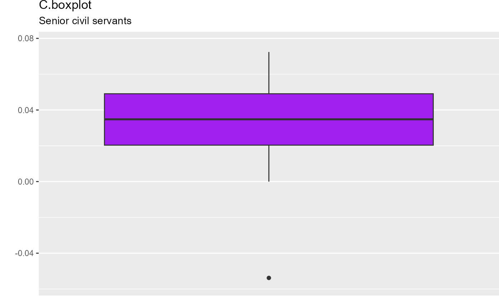

Title: Chauvenet-type boxplot in ggplot2
geom_chau_boxplot.RdThis function can be operated the same way as geom_boxplot() in ggplot2, except that the fence coefficient k=1.5 in Tukey's boxplot is replaced by the fence coefficient associated with Chauvenet’s criterion. For details, please refer to formula (9) in Lin et al. (2025).
Usage
geom_chau_boxplot(
mapping = NULL,
data = NULL,
geom = "boxplot",
position = "dodge2",
na.rm = FALSE,
show.legend = NA,
inherit.aes = TRUE,
...
)Arguments
- mapping
Aesthetic mappings created by `aes()`.
- data
The data to be displayed in this layer.
- geom
The geometric object to use for display.
- position
The position adjustment.
- na.rm
Logical. Should missing values be removed?
- show.legend
Logical. Should this layer be included in the legends?
- inherit.aes
If FALSE, overrides the default aesthetics.
- ...
Other arguments passed to the layer.
References
Hongmei Lin, Riquan Zhang and Tiejun Tong (2025). When Tukey meets Chauvenet: a new boxplot criterion for outlier detection. Journal of Computational and Graphical Statistics, accepted.
Examples
# Example 1
library(ggplot2)
rate.senior <- c(4.96, 6.30, -5.38, 1.60, 7.24, 5.26, 2.55, 5.96, 3.96,
4.19, 1.88, 4.06, 4.75, 0, 0, 2.5, 2.87, 3.00)/100
year <- 2007:2024
data.senior <- data.frame(x=year, y=rate.senior)
C.boxplot.senior <-
ggplot(data.senior, aes(y=rate.senior)) +
geom_chau_boxplot(fill="purple",width=3) +
theme(legend.position = "none") +
scale_x_discrete(breaks = NULL) +
ylim(-0.057,0.077) +
theme(plot.margin = unit(c(0, 0, 0, 0), "inches")) +
labs(title="C.boxplot", subtitle="Senior civil servants", x="", y="")
print(C.boxplot.senior)
